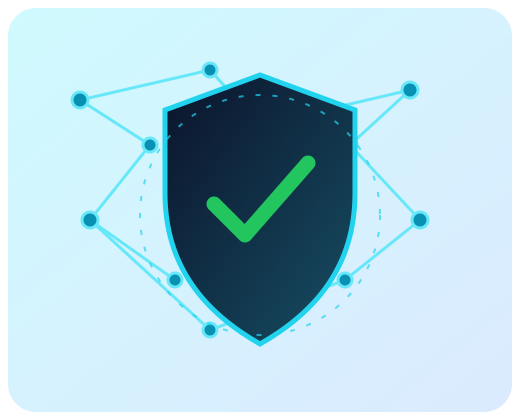
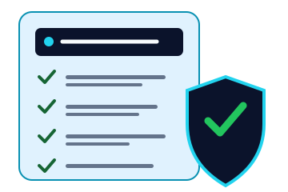

Know the threats
Learn how phishing, malware, scams, and weak passwords can put your information at risk.
Explore threatsYOUR FIRST STEP TO DIGITAL CONFIDENCE
Cybersecurity is not just for experts. Learn how to protect your accounts, recognize online threats, and build skills one practical step at a time.
Small habits. Stronger digital safety.

THE BASICS
Cybersecurity is the practice of protecting devices, accounts, networks, and information from unauthorized access, damage, or disruption. It includes technical tools, but it also depends on everyday decisions—like checking a link before clicking it.
You do not need to learn everything at once. Begin with a few reliable habits, then build your knowledge as you go.
EXPLORE CYBERSTART
Use these beginner-friendly guides to build your confidence.
Learn how phishing, malware, scams, and weak passwords can put your information at risk.
Explore threatsUse unique passwords, multifactor authentication, software updates, and careful link checking.
See safety habitsDiscover foundational skills, practice environments, and cybersecurity career directions.
Explore learningQUICK SELF-CHECK
Select the habits you already practice. Your selections are saved in this browser so you can return to your checklist later.
